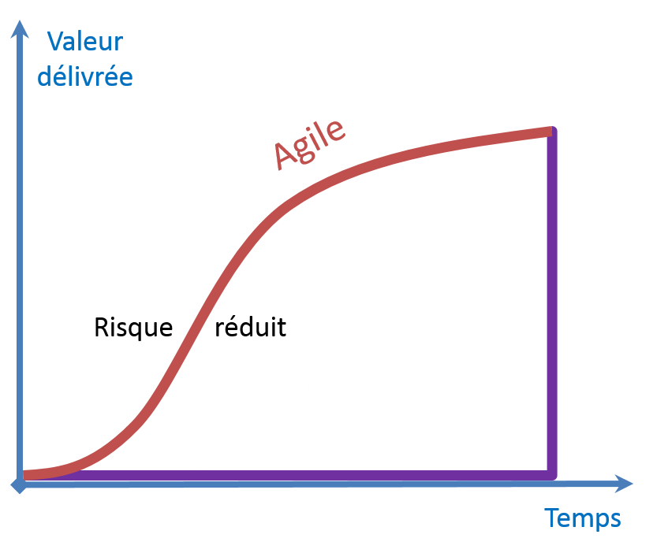
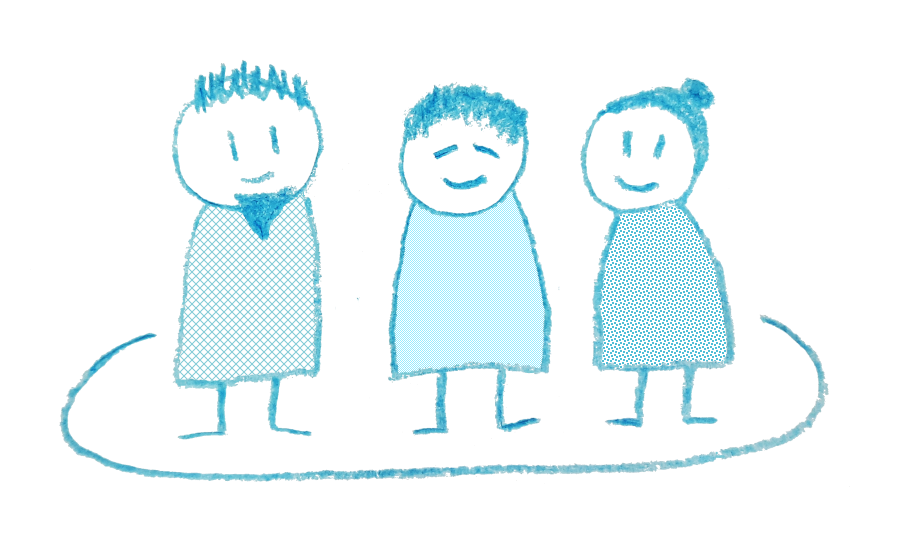
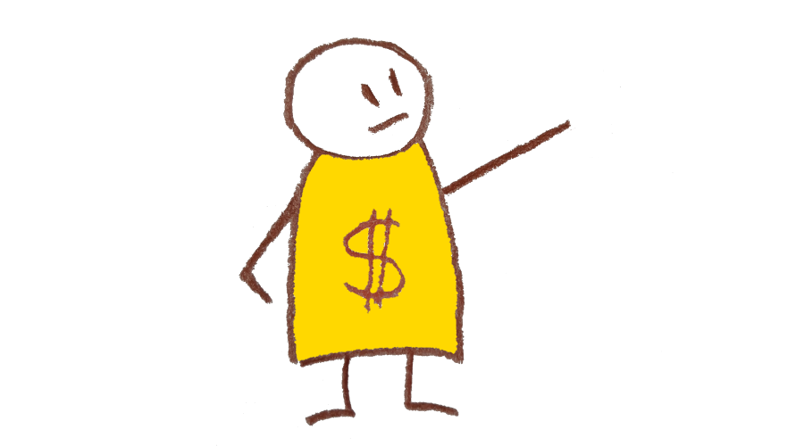
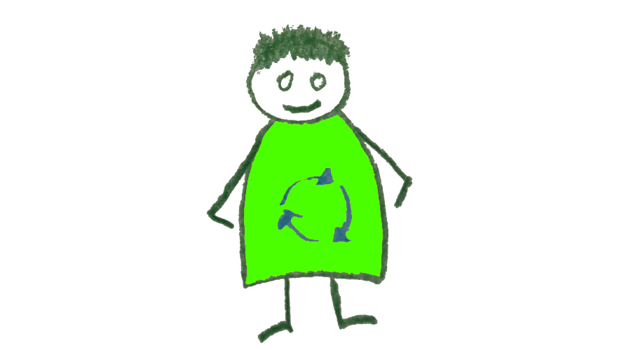
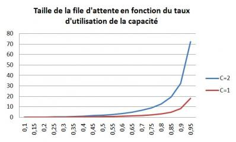

Découverte des valeurs agiles
Créé avec ♥♥♥ en 2015 et revu en mai 2019
F pour le fullscreen et S pour les speakernotes
Plan
- En 2 mots
- Quelques éléments de contexte
- Le manifeste
- Les 4 valeurs, l'une après l'autre...
- Quelques pratiques
- Pause
- Surprise
- Scrum et Kanban
- Interrogation
En 2 mots
Pour ceux qui aime le synthétique
Votre définition
En une phrase, ce que vous en savez.
Définition en une phrase
“Agile development uses feedback to make constant adjustments in a highly collaborative environment.”
— Andy Hunt
Le développement agile utilise les retours pour s'adapter en permanence dans un environnement hautement collaboratif.
En 2 minutes
C'est ce qui a été demandé à
Florent Lothon 
devant 1500 personnes au théatre Mogador.
Question de l’animateur :
Florent, qu’est ce que la ‘méthode agile’ ?
Réponse :
Il s’agit d’une méthodologie ...
Quelques éléments de contexte
Pour ceux qui sont nés après le 1/1/1970
Petite histoire de la productivité
Jusqu'à la fin du 19ème siècle, la productivité a augmenté lentement grâce au progrès des outils.
Puis Frederick W. Taylor invente l'OST :
- Division verticale du travail
- Division horizontale du travail
- Contrôle et récompense
Organisation Scientifique du Travail
Naissance du logiciel
De la seconde guerre mondiale jusqu'à la fin des années 1960, un programme informatique:
- consiste en des traitements batchs
- automatise des processus répétitifs
- est essentiellement codé en assembleur
- économise les bits et les cycles CPU

La première crise du logiciel
Fin des années 60, début des 70
- En 10 ans, la puissance des ordinateurs est multipliée par 100, et la productivité du développement par 4
- Premier colloque de Génie Logiciel
- On cherche à industrialiser le développement logiciel
- Invention du développement en cascade
La crise encore
Le Standish Group publie en 1995 le premier Chaos Report
“Software development projects are in chaos, and we can no longer imitate the three monkeys -- hear no failures, see no failures, speak no failures.”
- 250 milliards de $ dépensés par an aux USA
- Seuls 16,2% des projets sont on-time et on-budget
La métaphore du pont
Cette photo illustre la première page du premier Chaos Report.
La métaphore du pont
Le développement logiciel est assimilé à une pratique d'ingénierie telle que la construction ou la mécanique.
- La conception est la phase créative qu'il est difficile d'estimer.
- La fabrication est la phase la plus coûteuse.
- Donc, une conception très détaillée permet de garantir une fabrication optimale.
Au bout du pont
- Un découpage en multiple phases.
- Des phases découpées en étapes.
- Des documents en abondance et toujours à valider.
- Des équipes de spécialistes sans vue d'ensemble.
- De la sous-traitance, de l'off-shore.
- Un effet tunnel.
- Beaucoup d'énergie passée à estimer, planifier, découper, affecter …
Une ingénierie pas comme les autres
Un groupe d'irréductibles skieurs refuse
l'analogie de la construction.
Coder n'est pas fabriquer.
Fabriquer, c'est compiler.
La fabrication est la phase la moins coûteuse, elle est automatisée.
La conception, phase créative, qui exige de la compétence, va jusqu'à l'écriture du code.
Les méthodes légères
En réaction aux "plan-driven methodologies" ou "méthodes lourdes"
- Dynamic systems development method ou DSDM [1994]
- Scrum [1995]
- par Ken Schwaber et Jeff Sutherland
- eXtreme Programming [1996]
- par Kent Beck, Ward Cunningham et Ron Jeffries
- Crystal Clear [1996]
- par Alistair Cockburn
- Feature-Driven Development ou FDD [1997]
- par Jeff De Luca
Le manifeste agile
C'est où les pistes ?
2 jours à la montagne
Du 11 au 13 février 2001, 17 "organizational anarchists" se retrouvent à Snowbird dans l'Utah, pour discuter méthodes de développement logiciel.
Ils aboutissent à la signature du Manifeste Agile
même si Martin Fowler, qui est anglais, estime que la plupart des américains ne savent pas
prononcer agile correctement.
The Agile Manifesto
We are uncovering better ways of developing software by doing it and helping others do it.
Through this work we have come to value:
Individuals and interactions over processes and tools
Working software over comprehensive documentation
Customer collaboration over contract negotiation
Responding to change over following a plan
That is, while there is value in the items on the right, we value the items on the left more.
Le Manifeste Agile
Nous découvrons comment mieux développer des logiciels par la pratique et en aidant les autres à le faire.
Ces expériences nous ont amenés à valoriser :
Les individus et leurs interactions plus que les processus et les outils
Un logiciel opérationnel plus qu'une documentation exhaustive
La collaboration avec les clients plus que la négociation contractuelle
L’adaptation au changement plus que le suivi d'un plan
Nous reconnaissons la valeur des seconds éléments, mais privilégions les premiers.
1. Les individus et leurs intéractions
Le développement est une activité humaine
La compétence de l'individu
Le développement logiciel est une activité créative.
Les individus ne sont pas des ressources interchangeables.
Souvent, le débutant est expert
Limitons le WIP
La motivation est essentielle
Qu'est-ce qui motive un travailleur du savoir ?

Le travail en équipe
Plusieurs cerveaux font mieux qu'un seul.
Etre agile, c'est ne jamais travailler seul.
La bonne taille d'équipe ?
- Un seul, c'est pas une équipe.
- Deux, c'est un couple.
- Trois, c'est un contre deux.
- Quatre, c'est un couple contre un autre, toujours pas une équipe.
- au delà de Neuf, c'est compliqué d'avoir une seule conversation à table.
La bonne taille d'équipe
La communication

L'environnement
- La colocation de l'équipe est importante.
- Un environnement adapté à la collaboration.
- Un espace pour les réunions.
- Un espace pour les tableaux.
- Les outils et les processus doivent être adaptés à la capacité de l'équipe.
La transparence
Bienveillance. Confiance. Courage.
Liberté de parole. Sincérité. Honnêteté.
Quand la communication est-elle la plus efficace ?
Quand les gens désirent travailler ensemble et font ce qu'il faut pour réaliser l'objectif.
2. Un logiciel opérationnel
Parce que c'est le produit
Les 4 dimensions
du projet idéal
Les 4 dimensions
du projet réel

La qualité n'est pas négociable
Excellence technique
Tests automatiques
Intégration continue
Code propre
Correction des bugs au plus tôt
Simplicité
KISS : Keep It Simple, Stupid
ou l'art de minimiser le travail à faire.
Emergent Design ou Conception Emergente :
- La conception ne doit pas être uniquement en mode top-down.
- N'importe quel membre de l'équipe peut la revoir.
KISS
Concevez un outil permettant de planter un clou sans se taper sur les doigts avec le marteau ?
KISS
KISS
Trouvez une solution permettant de perçer un trou dans un mur sans que du platre ne se répande au sol ?
KISS
Un truc qui marche
Le fonctionnement réel du système est le principal indicateur d'avancement.
Tout le monde voit clairement l'avancement,
y compris le client.
3. Collaboration avec le client
Ce qui compte est sa satisfaction
La négociation du contrat
Autre façon de le dire
En cas de problème,
il est préférable de chercher des solutions
plutôt que de trouver des coupables.
Travailler ensemble
Le client (ou son représentant) est présent dans l'équipe.
Il est appelé Product Owner (PO) en Scrum.
De l'idée au produit
Un chemin semé d'embuches
Itératif et Incrémental
itératif /i.te.ʁa.tif/
Qui est répété, fait plusieurs fois.
incrément /ɛ̃.kʁe.mɑ̃/
Ajout, valeur ajoutée à une autre, en général à plusieurs reprises.
Construire une maison en méthode agile
NON ! Pas comme ça !

Comme ça !
Déploiement continu
Chaque livraison d'un incrément du logiciel fait l'objet
d'une démonstration organisée avec le client,
le sponsor, les key-users puis est mise en production.
La mise en production de chaque incrément permet de
recueillir du feedback régulièrement.
4. Accueil bienveillant du changement
Le changement c'est maintenant
Pilotage par le plan

Mais que valent nos estimations ?
Spécification de 3 pages
estimée à 295 heures
La même sur 12 pages
estimée à 330 heures
Mais que valent nos estimations ?
Juste l'information nécessaire
estimée à 15 heures
Avec des informations annexes
estimée à 28 heures
Et que dire de notre périmètre ?
Usage des fonctions développées
Pilotage par la valeur
Planning Continu
S'assurer que ce qu'on produit est toujours
ce qui a le plus de valeur.
Ceci impose des repriorisations régulières.
On attend la valeur
De la valeur au plus vite

Au final, encore plus de valeur
Amélioration Continue

Retour sur le manifeste
On ne s'en lasse pas
Les valeurs
Les individus et leurs interactions plus que les processus et les outils
Un logiciel opérationnel plus qu'une documentation exhaustive
La collaboration avec les clients plus que la négociation contractuelle
L’adaptation au changement plus que le suivi d'un plan
Un autre point de vue
| intéraction | processus, outil |
| logiciel | documentation |
| collaboration | contrat |
| adaptation | plan |
Les valeurs à gauche sont vecteurs de flexibilité
Celles de droite sont sources de rigidité
Exercice
Les 12 principes du manifeste.
- Pour un groupe, placement des principes sur la carte des valeurs.
- Pour un autre, regroupement des principes par bénéficiaire.
- Pour un dernier, rédaction des anti-principes.
Quelques Pratiques
Un ensemble de pratiques au service de valeurs
Radiateur d'Information
Affichage mural pour diffuser une information pertinente : tableau des tâches, nombre total de tests, ...
- l'équipe n'a rien à cacher (notamment à ses clients)
- l'équipe n'a rien à se cacher: elle admet et confronte ses difficultés
- provoque la discussion
Radiateur d'Information
Radiateur d'Information
Daily Scrum
Réunion quotidienne d'un quart d'heure, debout.
Qu’as tu fait depuis le dernier scrum ? Qu’est ce que tu dois faire ?
Qu’est ce qui t’empêche de faire ton travail ?
- favorise la circulation d'informations importantes
- permet de se synchroniser
- contribue à la cohésion de l'équipe
Backlog
Liste de toutes les fonctionalités ou tâches nécessaires à la réalisation du projet.
- pour les prioriser (ordonnées par ordre d'importance)
- donne la vision d'ensemble
Backlog
Dans le backlog, on trouve, ligne après ligne :
- des anomalies à corriger
- des petites fonctionalités
- des tâches techniques
- des modules entiers à développer
L'item de backlog est une simple phrase qui va être affinée (précisée, détaillée, découpée)
au fur et à mesure du besoin.
User Story
Histoire utilisateur représentant un incrément du logiciel.
Son expression doit pouvoir tenir sur un post'it.
- découpe le travail à faire
- apporte de la valeur au client
- unité de priorisation, de négociation
User Story
Planning Poker
Estimation collective et relative des user stories.
L'estimation est faite en points de complexité ou en taille de T-shirt.
Tout le monde dévoile son estimation au même moment.
- vérifier la faisabilité d'une user story
- concevoir une solution
- estimer pour prioriser
Definition of Done
Définition formelle des critères permettant de dire qu'une story est terminée.
- éviter la question : "c'est fini-fini ?"
- checklist permettant de ne pas oublier des activités
- définition claire de ce qui va être comptabilisé
Rétrospective
Réunion régulière de l'équipe pour faire le bilan de la période passée et réfléchir aux améliorations possibles.
- améliore le fonctionnement de l'équipe
- favorise l'auto-organisation
Programmation en Binôme
2 développeurs travaillent ensemble sur un même poste de travail.
Celui qui rédige le code est
appelé conducteur, l'autre, appelé observateur, l'assiste. Ils échangent leur rôle régulièrement.
- améliore la qualité du code produit
- partage la connaissance
- meilleure capacité à rester concentré
Pause
Surprise
Celui qui ne peut plus éprouver ni étonnement ni surprise
est pour ainsi dire mort
Marshmallow Challenge
Instructions
- 4 à 6 personnes par table
- 20 spaghettis + 1 mètre de scotch + 1 mètre de fil + 1 guimauve
- 18 minutes
- Construire la plus haute structure autoportante (ni tenue ni suspendue) pour porter la guimauve
- On mesure la hauteur entre la base et la guimauve entière
- Vous pouvez utiliser tout le kit ou seulement une partie
- Vous pouvez couper les spaghettis, le scotch, le fil mais pas la guimauve
Résultats
Qu'a-t-on appris ?
- Le travail en équipe ?
- A respecter le timeboxing ?
- La définition du fini ?
- A prototyper ?
- A identifier les préjugés cachés ?
Scrum
LA méthode agile
Origine
Ken Schwaber et Jeff Sutherland ont présenté Scrum pour la première fois à la conférence OOPSLA en 1995.
Scrum est le résultat de bonnes pratiques du développement logiciel observées
3 piliers
- Transparence
- Inspection
- Adaptation
4 rôles
- Development Team
- Product Owner
- Scrum Master
- Stakeholders
Tous mal nommés !
Equipe de Réalisation

Champion de la Valeur

Certains disent PO
Champion de la Valeur
et la Backlog de l'équipe
Facilitateur

Certains disent Scrum Master
Les Parties Prenantes
- Clients
- Utilisateurs
- Sponsor
- Manager
- Experts
Toutes les personnes impactées
Sprint
Daily Scrum
Product Backlog

Sprint Planning

Découpage en tâches
Sprint Review

C'est la démonstration, mais pas que
Rétrospective
Les Rôles

En résumé
Une méthode simple
Facile à comprendre
Difficile à maitriser
Kanban
La carte qui vient du Japon
Origine
A la fin des années 40, Toyota expérimente la production en flux tendu. Cela consiste à limiter la production d'un poste amont au juste besoin du poste aval.
Suite au choc pétrolier, on commence à en entendre parler.
Quel mot bizarre !
En japonais, KANBAN signifie "signal visuel" ou "étiquette".
On utilise un K majuscule pour la méthode uniquement.
Kanban pour l'IT
A partir de 2005, une application du système Kanban aux métiers du savoir est développée sous l'impulsion de David Anderson.
Le kanban signal d'information devient le kanban représentant d'un élément de travail.
4 principes
- Démarrez avec votre processus existant
- Engagez-vous à l'améliorer progressivement
- Respectez le processus, les rôles, les responsabilités
- Encouragez le leadership à tous les niveaux
6 pratiques clés
- Visualiser
- Limiter le WIP
- Gérer le flux
- Expliciter les règles
- Implémenter des boucles de feedback
- S'améliorer par la collaboration
Visualiser
les éléments de travail
Définir les types de cartes. Une bonne granularité doit permettre de sortir 5 à 10 cartes par semaine.
Chaque carte contient au moins les informations suivantes :
- Type de travail
- Résumé de la tache
- Date d'entrée
- Date de sortie
Est-ce que tout le travail est représenté ?
Visualiser
le flux de travail
Représenter notre processus sur un tableau.
Le système est défini par son Inbox et son Outbox. Il représente le processus dont l'équipe est propriétaire.
Entre chaque activité, il peut y avoir une file d'attente.
Visualiser
Visualiser
les indicateurs
Avatar ou nom des équipiers
Blocage externe
Anomalie interne
Le truc urgent !
Visualiser
Limiter le travail en cours
Avec des limites hautes
mais aussi basses en amont des goulets
d'étranglement
Commencer par une limite haute de (2 x nbre pers) - 1
Un BON management visuel
répond aux questions suivantes :
- Quel est le travail qui est fait ici ?
- Comment le travail doit-il être fait ?
- Quel est le processus ?
- Qu'est-ce qui est normal/attendu ?
- Comment les problèmes sont-ils remontés ?
- Qu'est-ce qui n'est PAS normal/attendu ?
- Qu'est-ce qui empêche notre travail d'être fluide ?
- Comment chacun sait ce qu'il a à faire ?
- Est-ce que les objectifs sont atteints ?
Gérer le flux
Mesurer pour améliorer et prévoir.
Mesurer le temps de cycle
Mesurer le débit
Expliciter les règles du processus
- Règles de sélection d'un item
- Règles aux interfaces
- Règles d'escalade
- Règles de changement des priorités
- Règles de purge
Les règles sont affichées et respectées.
Expliciter les règles du processus
Mise sous tension
C'est parti pour le daily meeting !
L'équipe parcourt le tableau de droite à gauche.
- Le tableau est-il à jour ?
- Qu'est-ce qu'il est important de faire aujourd'hui ?
- A-t-on des blocages ?
- Sont-ils visibles ?
- Comment les gérer ?
Implémenter des boucles de feedback
Rétrospective
Une heure par semaine en équipe pour répondre aux questions suivantes en nous aidant de nos mesures :
- Est-ce que notre tableau est représentatif de notre travail ?
- Est-ce qu'on suit le travail au bon niveau de granularité ?
- Peut-on identifier des freins à notre flux de travail ?
- Doit-on adapter certaines limites, créer ou supprimer des files d'attente ?
Implémenter des boucles de feedback
Rétrospective
- Comment améliorer la qualité de notre travail ?
- Quel est l'avis de nos clients sur le résultat produit ?
- Notre rythme a-t-il été soutenable ?
- Comment augmenter notre performance ?
S'améliorer par la collaboration et l'expérimentation
S'améliorer par la collaboration et l'expérimentation
Roue de Deming : PDCA
- Plan. Identifier une opportunité et plannifier le changement.
- Do. Tester le changement, à petite échelle si nécessaire.
- Check. Analyser les résultats, acquérir de l'expérience.
- Act. Si l'expérience est réussie, modifier les règles pour entériner le changement
S'améliorer par la collaboration et l'expérimentation
Un essai qui se transforme en échec n'en est pas un si l'ensemble de l'équipe en a appris quelque chose.
Votre culture valorise : la tolérance à l'échec, l'expérimentation scientifique, l'esprit d'initiative, la responsabilité collective.
La théorie des flux
peut nous aider

80% d'occupation est la cible à viser
La théorie des flux
Vous n'y croyez pas et pourtant !
La théorie des flux
Mais que faire 20% du temps ?
Aider les autres
Apprendre et pratiquer de nouvelles compétences
Améliorer le système kanban
En résumé
Une méthode à mettre en place progressivement,
bien adaptée aux travaux où la planification
moyen et long terme est impossible.
Le risque est d'oublier l'amélioration.
Un conseil : travaillez vos obstacles.
Quizz
La main ouverte pour Vrai, le poing fermé pour Faux,
les doigts pour les chiffres
Le Sprint Planning peut durer
jusqu'à 8 heures.
La présence du PO au Daily Scrum est indispensable.
Pendant le Daily Scrum, le Scrum Master affecte les tâches aux membres de l'équipe.
Le sprint de 3 semaines a débuté vendredi, avec une équipe de 10 personnes. Le lundi lors du scrum du matin, on apprend qu’un développeur s’est cassé le bras droit au ski, il est plâtré pour une semaine.
- Le Scrum Master interdit le ski à toute l’équipe jusqu’à la fin de la release
- L’équipe diminue sa capacité sur le sprint en enlevant des stories au périmètre
- On lui trouve un remplaçant
- On verra ce que ça donne et en attendant on lui achète une souris pour gaucher
Une équipe est cross-fonctionnelle quand elle dispose des compétences suffisantes
pour réaliser le projet.
En fin de Sprint Scrum, on doit livrer le produit en production.
Une story planifiée pour le prochain sprint est jugée finalement inutile par le Product Owner.
- On la supprime
- On la fait quand même car elle est dans le plan de release
- On la remplace par une autre de même taille et on la garde en fin de backlog
- On diminue sa priorité
Dans l'équipe Scrum, il n'y a ni business analyst ni testeur,
il n'y a que des programmeurs.
Durant un planning poker, tous les membres de l'équipe donnent une estimation.
Une personne dans l’équipe perturbe les autres. Vous êtes Scrum Master, comment réagissez-vous ?
- Vous la virez de l'équipe, la majorité est d’accord
- Vous ne faites rien, il n’y a pas de chef avec Scrum
- Vous faites un rapport à la direction
- Vous l’invitez à boire un coup pour lui proposer d’être le Scrum Master du prochain sprint
Dans un sytème kanban, il est possible de faire revenir une carte à l’étape précédente (en cas de bug par exemple).
Qu’est-ce que le Lead Time ?
- La personne mesurant le temps de parole lors du daily meeting
- Le temps de traversée d’une carte kanban
- Le temps d’attente d’une carte kanban
- La charge de réalisation d’une carte kanban
La confiance est un élément essentiel de la culture agile.
Impossible de gérer en agile un projet nécessitant plus de 10 personnes.
Développer un logiciel en agile est plus rapide.
Une dernière pratique
Le ROTI
Return On Time Invested
POULET en français, selon la définition de Pablo Pernot:
Performance Octroyée selon l'Utilité et la Légitimité du sujet En relation avec le Temps passé
Return On Time Invested
- Totalement inutile, j'ai perdu mon temps
- Négatif, trop de temps par rapport à la valeur reçue
- Moyen, équilibre entre gain et temps passé
- Positif, gain supérieur au temps passé
- Réellement utile, vaut largement le temps passé
The End
- Cette présentation utilise reveal.js de Hakim El Hattab
- Snowbird Tram photo de D. Ramey Logan
- Fond du manifeste agile photo de Ward Cunningham
- Illustrations du KISS empruntées au site bouzin-agile
- Waste In Software Projects, de l'usage des fonctions développées
- Photo de tableau agile empruntée au site The Agile Pirate
- Marshmallow Challenge et illustration en provenance du site éponyme
- Le Quizz Scrum de Claude Aubry
{kind=link}